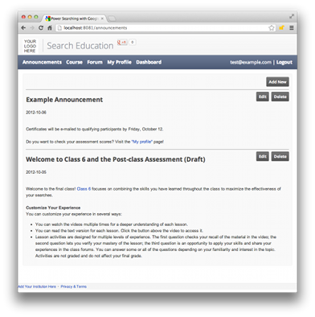

Anuncios
y material opcional
El
contenido del curso oficial que se crea mediante nuestro código experimental
(ver Implementar
Material del curso ) es, por supuesto, una parte importante de la
comunicación formal entre usted y sus estudiantes. Sin embargo, no es la
única comunicación.
En
este sentido, distinguir entre la comunicación formal, típicamente iniciadas
por el personal del curso, desde la comunicación informal foro de la web, a
menudo iniciadas por los estudiantes. Todos estos esfuerzos son
importantes para crear un sentimiento de comunidad para el éxito de sus
estudiantes y su personal por supuesto.
El
tipo de comunicación formal que normalmente vemos son:
|
Anuncios-Lista
de Correo
A
lo largo de su curso, es posible que desee enviar un correo electrónico a
todos los alumnos matriculados. (Vea anuncios y material opcionalpara los correos electrónicos sugeridos). Para
ello, necesita un alias de correo electrónico que incluye a aquellos
estudiantes registrados.Desarrollador del curso no proporciona una forma de
inscribir automáticamente a los estudiantes en una lista de correo
electrónico.
En
su lugar, usted tiene varias opciones:
- Si usted ya tiene una forma de gestionar un
alias de correo electrónico de gran tamaño, utilizar ese mecanismo. Para
obtener una lista de los estudiantes registrados, consulte Exportar Datos del Curso .
- Si el curso tiene menos de 100 estudiantes,
usted puede enviar correo desde la aplicación de Google App Engine de
forma gratuita. Si desea enviar más de 100 correos electrónicos en
un solo día, usted tendría que actualizar a una cuenta de Google App
Engine pagado. Ver el funcionario documentación Google App Engine .
- Alternativamente, puede utilizar Grupos de
Google para crear un alias de correo electrónico del aviso. Incluya un enlace de suscripción a su grupo en la página que se muestra
cuando un estudiante con éxito registra .
Esta
página describe cómo crear un alias anuncio utilizando Google Groups y la
forma de sugerir a sus estudiantes que se suscriben a ese alias.
Crear
anuncios de solo grupo de Google
Para
crear una lista de Grupos de Google sólo permite que los propietarios de
mensaje (es decir, uno que se utiliza para los anuncios, pero no para
interactuar con sus estudiantes):
- Visita http://groups.google.com .
- Haga clic en el botón Nuevo grupo.
- En la pantalla Crear grupo:
- Escriba un nombre de grupo como Mi Curso Anunciar, donde mi curso es el nombre de tu curso.
Tenga en cuenta que el sistema establece automáticamente la dirección de correo electrónico a mi grupo-curso-announce @ googlegroups.com.
- Escriba una descripción de grupo.
- Configurar el tipo de grupo a la lista de correo electrónico.
- En Permisos básicos,
- Set Ver temas a cualquiera.
- Establecer Mensaje a los propietarios del grupo.
- Establecer Únete al grupo a cualquiera.
- Una vez que termine de crear el grupo, verá
una pantalla de enhorabuena. Desde esa pantalla, seleccione Personalizar la configuración de su grupo.
- En la barra de navegación izquierda, expanda Configuración.
- En la barra de navegación izquierda,
seleccione Opciones de correo electrónico.
- (Opcional) Agregue un prefijo del asunto,
para que los alumnos puedan identificar fácilmente los mensajes
enviados desde este grupo.
- (Opcional) En el pie de página de correo electrónico, seleccione Mostrar cómo darse de baja de este grupo
por correo electrónico.
- En las respuestas de correos, elegir a los propietarios del grupo. Esto restringe los miembros de los
alias de envío de correo electrónico a nadie que no sean los
propietarios del grupo.
- Guardar esta configuración.
- En la barra de navegación izquierda,
seleccione moderación.
- En los mensajes moderados, elija Moderado todos los mensajes al grupo.
- Guardar esta configuración.
- En la barra de navegación izquierda,
seleccione los nuevos miembros.
- En permisos de miembros nuevos, apague Los nuevos miembros pueden publicar.
- Guardar esta configuración.
- En la barra de navegación izquierda, expanda permisos.
- En la barra de navegación izquierda,
seleccione los permisos de acceso.
- Establecer Contacto con el propietario de un Grupo de Propietarios para el grupo, para restringir anuncio a los
propietarios.
- Guardar esta configuración.
- En la barra de navegación izquierda, expanda Miembros.
- En la barra de navegación izquierda,
seleccione Todos los miembros. Usted debe ser el único miembro de la
lista.
- Haga clic en la fila que le representa.
- En la nueva página, bajo el permiso de publicación, elija Ignorar: El miembro está autorizado a
publicar.
- Guardar esta configuración.
Usted
(y sólo usted) ahora pueden enviar mensajes a un grupo nuevo, ya sea desde la
interfaz de Grupos de Google o enviando un correo electrónico a GROUPNAME@googlegroups.com.
Para
obtener más información sobre la configuración de estos y otros, consulte Crear un grupo .
Incluir
enlace de suscripción
Cuando
un estudiante se matricula en el curso, debe incluir información acerca de
cómo suscribirse a los anuncios del grupo-sólo que creó en la sección
anterior.
Consulte Crear registro para obtener información acerca de cómo
modificar el registro.
Incluir
información sobre su grupo en la página el estudiante ve en el registro
correctamente. Para ello, modifique el archivo en views / confirmation.html. Si su grupo se denomina Mi-Curso-Announce, incluir algo como lo siguiente:
<p
class="top_content"> Gracias por registrarse. </ p>
<p>
Para recibir avisos sobre este curso, inscribirse en el
anuncios
de solo lista de correo electrónico a
<A
En
esa página, haga clic en Unirse al grupo de <b> </ b>.
En
el cuadro de diálogo que aparece, bajo <b> ¿Cómo deseas leer este
grupo? </ B>, seleccione <b> correo electrónico </ b>.
</ P>
Anuncios-Lista
de Correo
A
lo largo de su curso, es posible que desee enviar un correo electrónico a
todos los alumnos matriculados. (Vea anuncios y material opcionalpara los correos electrónicos sugeridos). Para
ello, necesita un alias de correo electrónico que incluye a aquellos
estudiantes registrados.Desarrollador del curso no proporciona una forma de
inscribir automáticamente a los estudiantes en una lista de correo
electrónico.
En
su lugar, usted tiene varias opciones:
- Si usted ya tiene una forma de gestionar un
alias de correo electrónico de gran tamaño, utilizar ese mecanismo. Para
obtener una lista de los estudiantes registrados, consulte Exportar Datos del Curso .
- Si el curso tiene menos de 100 estudiantes,
usted puede enviar correo desde la aplicación de Google App Engine de
forma gratuita. Si desea enviar más de 100 correos electrónicos en
un solo día, usted tendría que actualizar a una cuenta de Google App
Engine pagado. Ver el funcionario documentación Google App Engine .
- Alternativamente, puede utilizar Grupos de
Google para crear un alias de correo electrónico del aviso. Incluya un enlace de suscripción a su grupo en la página que se muestra
cuando un estudiante con éxito registra .
Esta
página describe cómo crear un alias anuncio utilizando Google Groups y la
forma de sugerir a sus estudiantes que se suscriben a ese alias.
Crear
anuncios de solo grupo de Google
Para
crear una lista de Grupos de Google sólo permite que los propietarios de
mensaje (es decir, uno que se utiliza para los anuncios, pero no para
interactuar con sus estudiantes):
- Visita http://groups.google.com .
- Haga clic en el botón Nuevo grupo.
- En la pantalla Crear grupo:
- Escriba un nombre de grupo como Mi Curso Anunciar, donde mi curso es el nombre de tu curso.
Tenga en cuenta que el sistema establece automáticamente la dirección de correo electrónico a mi grupo-curso-announce @ googlegroups.com.
- Escriba una descripción de grupo.
- Configurar el tipo de grupo a la lista de correo electrónico.
- En Permisos básicos,
- Set Ver temas a cualquiera.
- Establecer Mensaje a los propietarios del grupo.
- Establecer Únete al grupo a cualquiera.
- Una vez que termine de crear el grupo, verá
una pantalla de enhorabuena. Desde esa pantalla, seleccione Personalizar la configuración de su grupo.
- En la barra de navegación izquierda, expanda Configuración.
- En la barra de navegación izquierda,
seleccione Opciones de correo electrónico.
- (Opcional) Agregue un prefijo del asunto,
para que los alumnos puedan identificar fácilmente los mensajes enviados
desde este grupo.
- (Opcional) En el pie de página de correo electrónico, seleccione Mostrar cómo darse de baja de este grupo
por correo electrónico.
- En las respuestas de correos, elegir a los propietarios del grupo. Esto restringe los miembros de los
alias de envío de correo electrónico a nadie que no sean los
propietarios del grupo.
- Guardar esta configuración.
- En la barra de navegación izquierda,
seleccione moderación.
- En los mensajes moderados, elija Moderado todos los mensajes al grupo.
- Guardar esta configuración.
- En la barra de navegación izquierda,
seleccione los nuevos miembros.
- En permisos de miembros nuevos, apague Los nuevos miembros pueden publicar.
- Guardar esta configuración.
- En la barra de navegación izquierda, expanda permisos.
- En la barra de navegación izquierda,
seleccione los permisos de acceso.
- Establecer Contacto con el propietario de un Grupo de Propietarios para el grupo, para restringir anuncio a los
propietarios.
- Guardar esta configuración.
- En la barra de navegación izquierda, expanda Miembros.
- En la barra de navegación izquierda,
seleccione Todos los miembros. Usted debe ser el único miembro de la
lista.
- Haga clic en la fila que le representa.
- En la nueva página, bajo el permiso de publicación, elija Ignorar: El miembro está autorizado a
publicar.
- Guardar esta configuración.
Usted
(y sólo usted) ahora pueden enviar mensajes a un grupo nuevo, ya sea desde la
interfaz de Grupos de Google o enviando un correo electrónico a GROUPNAME@googlegroups.com.
Para
obtener más información sobre la configuración de estos y otros, consulte Crear un grupo .
Incluir
enlace de suscripción
Cuando
un estudiante se matricula en el curso, debe incluir información acerca de
cómo suscribirse a los anuncios del grupo-sólo que creó en la sección
anterior.
Consulte Crear registro para obtener información acerca de cómo
modificar el registro.
Incluir
información sobre su grupo en la página el estudiante ve en el registro
correctamente. Para ello, modifique el archivo en views / confirmation.html. Si su grupo se denomina Mi-Curso-Announce, incluir algo como lo siguiente:
<p
class="top_content"> Gracias por registrarse. </ p>
<p>
Para recibir avisos sobre este curso, inscribirse en el
anuncios
de solo lista de correo electrónico a
<A
En
esa página, haga clic en Unirse al grupo de <b> </ b>.
En
el cuadro de diálogo que aparece, bajo <b> ¿Cómo deseas leer este
grupo? </ B>, seleccione <b> correo electrónico </ b>.
</ P>
Tipo
|
Aplicación
típica
|
Ejemplos
|
|
Anuncios
recordatorios
|
Correo
electrónico, copia de seguridad en la ficha Anuncios
|
Plazos
para las evaluaciones. Lanzamiento de nuevas unidades. Ver Anuncios de sólo lista de correo electrónico para obtener información sobre la configuración
de correo electrónico y la lista de anuncios Tab Anuncios actualización para obtener información sobre la ficha.
|
|
Anuncios
informativos
|
Web
mensaje en el foro, copia de seguridad de la ficha Anuncios
|
Una
respuesta estándar a una pregunta que surgió reiteradamente en cualquier
comunicación de los estudiantes. (Por ejemplo, si la redacción de una
pregunta actividad confundido a muchos estudiantes, es posible que decida
publicar una aclaración.) Véase el diálogo comunitario para obtener información sobre la creación
de un foro de Internet y Tab Anuncios actualización para obtener información sobre la ficha.
|
|
Material
del curso opcional
|
Web
mensaje en el foro, página Google+ o mensaje Blog
|
Lectura
de la Biblia para los estudiantes que podrían necesitar un poco de ayuda para
empezar. Un poco de material fuera de tema o más avanzado para los
estudiantes que quieran explorar los aspectos del tema no se tratan en las
principales materias o que deseen actividades más desafiantes para reforzar
su conocimiento de los materiales principales.
|
Actualizado
Anuncios Tab
Desarrollador del curso proporciona una ficha
anuncios para que usted pueda publicar anuncios de cursos.

Le recomendamos que agregue a esta ficha todos los
anuncios que se envían tanto a un alias
de correo electrónico anuncios o en un foro de
discusión de la comunidad. Esto
permite a los estudiantes ver todos los anuncios de cursos, incluso si deciden
no unirse a un alias de correo electrónico o visitar el foro.
Vuelva
a colocar anuncios de muestra
El curso muestra contiene un
par de anuncios de ejemplo. Debe
eliminar estos anuncios, haciendo clic en el botón Eliminar asociado a cada anuncio muestra.
Añadir
un anuncio
Acceda a la pestaña Anuncios
de su curso. Haga
clic en Agregar nuevo. Desarrollador
del curso muestra el editor de anuncio. Usted
puede utilizar el formato HTML en el cuerpo del anuncio, como los anuncios de
ejemplo muestran.
De forma predeterminada, cuando se crea un anuncio,
su estado es Proyecto. Esto
significa que los estudiantes que aún no puede ver el anuncio. Cuando
esté listo para que los estudiantes ver el anuncio, editar y ajustar el estado
(debajo del cuerpo) ha publicado.
(Opcional)
Quite la lengüeta completamente
La pestaña de anuncios es
opcional. Si
usted no desea que la ficha, retírelo de visitas
/ views / base.html y base_registration.html.
Hay
una gran variedad de tecnologías disponibles para cada uno de estos tipos de
comunicación. Lo que usted elige utilizar depende de sus circunstancias. Lo
que describimos a continuación son las decisiones que tomamos para la búsqueda
de energía.
Anuncios recordatorios
Usted
puede optar por enviar anuncios de recordatorio a los estudiantes en los puntos
importantes en el camino. Considere la posibilidad de enviar los avisos
recordatorios siguientes:
En la inscripción en el curso
Deje que los estudiantes saben que su registro se ha procesado e incluir
una breve descripción del curso, el programa de alto nivel para el curso,
una introducción a las características de la comunidad disponibles para
los estudiantes, y así sucesivamente.Cada vez que suelte el contenido nuevo
Enlace a los nuevos contenidos y mencionar los plazos siguientes.A mitad, a los estudiantes que se han
registrado pero no se ha iniciado el curso
Esto se suma a los correos electrónicos regulares anunciando el
lanzamiento de nuevos contenidos. A veces los estudiantes se
inscriben y luego se olvide de iniciar el curso. A mitad del curso,
enviar sólo a estas personas un recordatorio de que puede ser que desee
iniciar.Antes de que un evento especial
Por ejemplo, si usted tiene horas de oficina en línea utilizando un Hangout On Air, envíe un
mensaje de recordatorio poco antes de que ocurra.Tras la presentación de la evaluación final
La notificación de si el estudiante ha pasado y cuándo esperar el
certificado (si lo hay).
Lo
que los anuncios de recordatorio de que decida enviar, le recomendamos que les
redactar con antelación. Ver mensajes de correo electrónico de ejemplo para algunas muestras.
Durante Poder Búsqueda con Google , hemos observado un aumento significativo en la
participación de los estudiantes cada vez que enviamos avisos recordatorios, lo
cual nos hizo utilizando el correo electrónico. Decidimos utilizar el
correo electrónico porque los estudiantes tienen más probabilidades (aunque no
se garantiza) para ver los mensajes de correo electrónico que ver las cosas
publicadas por otros medios.
Consejo: Utilice otros mecanismos, como tu página de
Google+ o en su foro, los anuncios y menos importantes para los avisos
informativos. Si decide no utilizar el correo electrónico, utilice uno de
los mecanismos de todos los anuncios.
Ver Anuncios de sólo lista de correo electrónico para obtener información sobre la
configuración de lista de anuncios de correo electrónico.
Anuncios
informativos
Durante
el curso, es posible que desee dejar que sus alumnos saben algo que es opcional
o que de otra manera no creo que vale la pena enviar a todas sus cuentas de correo
electrónico.
Considerar
la creación de una categoría de nivel superior avisos en tu foro. El uso
que enviar actualizaciones diarias, preguntas frecuentes, etc.
Por
ejemplo, puede recibir la misma pregunta de muchos estudiantes, a través de una
variedad de mecanismos de comunicación. Al principio, es probable que
responder a estas preguntas de una en una, en cualquier lugar se hizo la
pregunta. Una vez que se observa la tendencia, sin embargo, es posible que
desee crear una respuesta estándar a esta pregunta, publicarlo en un lugar, y
eliminar duplicados para evitar confusiones.
A
pesar de responder a una pregunta estándar puede ser considerado como un
anuncio formal, tratándolo de una manera más informal es apropiado. Le
sugerimos utilizar el foro
de la web para
este fin.
Como
se puede ver en la
página , si utiliza un mensaje en el foro para estos
anuncios, usted puede marcar los duplicados de la cuestión de la entrada
respuestas y reducir el ruido en su foro.
Material del curso opcional
Las
lecciones , actividades y evaluaciones contener su material del curso principal. Sin
embargo, usted puede tener material opcional puede sugerir para algunos
estudiantes. Por ejemplo, puede hacer que la lectura de fondo para
estudiantes que necesitan un poco de ayuda extra para empezar. Usted puede
tener el material más avanzado para los estudiantes que desean actividades más
desafiantes para reforzar su conocimiento de los materiales principales. Usted
puede tener material sobre los aspectos del tema que no están cubiertos en
absoluto en las materias principales para los estudiantes que desean explorar
más.
Usted
tiene varias opciones para crear su material opcional, dependiendo de sus
objetivos para ello.
Para
opcionales, más difíciles, actividades, usted puede optar por publicar de
inmediato a su foro web. La ventaja de este enfoque es que se puede animar
a sus estudiantes a enviar sus respuestas y discutir las respuestas entre
ellos.
Para
el material de fondo o de material en material relacionado, pero no primario,
usted puede optar por crear blogs y entradas en su página de Google+. Además,
si utiliza Hangouts
On Air en
tu curso, puedes publicar aquellos en su página de Google+ como una manera
fácil para sus estudiantes acceder a ellos.
Incluso
si usted guarda el foro web para su curso privado de sus estudiantes
registrados, es posible que tenga una página de Google+ o blog que está a
disposición de un público más amplio. Puedes usarlos como medios para que
todos sepan lo que es un gran curso que has creado.
Incluso
puede crear una página de Google+ explícitamente para su curso. Considere
la posibilidad de crear
una página de Google+ para
tu curso antes de soltar el curso.